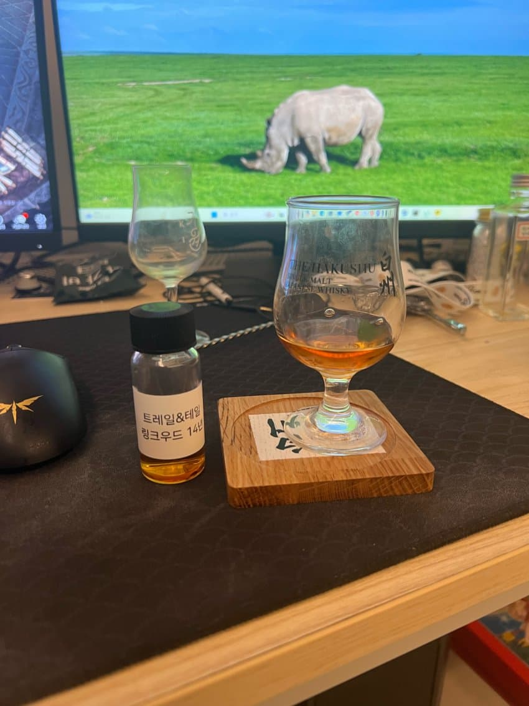

숙성 년수: 약 14년 (2010년 증류, 2025년 병입)
캐스크: 올로로소 셰리 혹스헤드 (Oloroso Sherry Hogshead)
도수: 55.7% (캐스크 스트렝스, 논칠필터, 논컬러)
N
베리류 단향, 정향, 스파이시, 바닐라,토피(달고나), 핵과류, 건초, 오크
베리류 단향,오크,정향스파이시 가 먼저옴
시간지나면서 바닐라랑 달고나같은 뉘앙스가 강해짐
더지나면 핵과류 뉘앙스가 좀올라옴
중간중간 건초같은 마른풀느낌 약간
P
산뜻한 과실(베리/박과류), 몰티함, 다크초콜릿, 정향, 스파이시
베리와박과류 중간어딘가의 산뜻한 과실향
씁쓸한 다크초콜릿
몰티한 단맛
노즈에서 이어지는 정향과 약간의 스파이시
F
과실 잔향, 오크
초반보다는 시간이 좀더들여 기다렸을때의 뉘앙스가 개인적으로는 좋았던것같습니다
좋은기회주신 헤비피티드님 감사합니다
댓글 5개